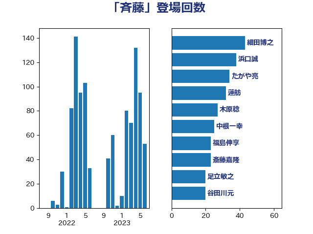

単語「斉藤」

| 浜口誠 | 国民民主党 | 25 回 |
| 中根一幸 | 自由民主党 | 24 回 |
| 斎藤嘉隆 | 立憲民主党 | 23 回 |
| たがや亮 | れいわ新選組 | 22 回 |
| 足立敏之 | 自由民主党 | 17 回 |
| 細田博之 | 自由民主党 | 16 回 |
| 福山哲郎 | 立憲民主党 | 13 回 |
| 福島伸享 | 無所属 | 13 回 |
| 藤岡隆雄 | 立憲民主党 | 13 回 |
| 岸田文雄 | 自由民主党 | 11 回 |
| 福田昭夫 | 立憲民主党 | 9 回 |
| 竹内真二 | 公明党 | 9 回 |
| 谷田川元 | 立憲民主党 | 9 回 |
| 里見隆治 | 公明党 | 9 回 |
| 野田国義 | 立憲民主党 | 9 回 |
| 山井和則 | 立憲民主党 | 8 回 |
| 芳賀道也 | 国民民主党 | 8 回 |
| 伊藤孝江 | 公明党 | 7 回 |
| 大串博志 | 立憲民主党 | 7 回 |
| 河西宏一 | 公明党 | 7 回 |
| 海江田万里 | 立憲民主党 | 7 回 |
| 稲津久 | 公明党 | 7 回 |
| 斉藤鉄夫 | 公明党 | 6 回 |
| 足立康史 | 日本維新の会 | 6 回 |
| 山崎誠 | 立憲民主党 | 5 回 |
| 杉本和巳 | 日本維新の会 | 5 回 |
| 鈴木宗男 | 日本維新の会 | 5 回 |
| 室井邦彦 | 日本維新の会 | 4 回 |
| 枝野幸男 | 立憲民主党 | 4 回 |
| 秋野公造 | 公明党 | 4 回 |
| 赤羽一嘉 | 公明党 | 4 回 |
| 道下大樹 | 立憲民主党 | 4 回 |
| 鈴木英敬 | 自由民主党 | 4 回 |
| おおつき紅葉 | 立憲民主党 | 3 回 |
| 大口善徳 | 公明党 | 3 回 |
| 山口壯 | 自由民主党 | 3 回 |
| 山本順三 | 自由民主党 | 3 回 |
| 川崎ひでと | 自由民主党 | 3 回 |
| 市村浩一郎 | 日本維新の会 | 3 回 |
| 杉尾秀哉 | 立憲民主党 | 3 回 |
| 根本匠 | 自由民主党 | 3 回 |
| 泉田裕彦 | 自由民主党 | 3 回 |
| 浅川義治 | 日本維新の会 | 3 回 |
| 田嶋要 | 立憲民主党 | 3 回 |
| 石原宏高 | 自由民主党 | 3 回 |
| 神津たけし | 立憲民主党 | 3 回 |
| 笠井亮 | 日本共産党 | 3 回 |
| 高見康裕 | 自由民主党 | 3 回 |
| 中山展宏 | 自由民主党 | 2 回 |
| 中川郁子 | 自由民主党 | 2 回 |
| 伊藤渉 | 公明党 | 2 回 |
| 佐々木さやか | 公明党 | 2 回 |
| 前原誠司 | 国民民主党 | 2 回 |
| 加藤鮎子 | 自由民主党 | 2 回 |
| 吉田宣弘 | 公明党 | 2 回 |
| 城井崇 | 立憲民主党 | 2 回 |
| 小島敏文 | 自由民主党 | 2 回 |
| 小西洋之 | 立憲民主党 | 2 回 |
| 小里泰弘 | 自由民主党 | 2 回 |
| 山口俊一 | 自由民主党 | 2 回 |
| 山本剛正 | 日本維新の会 | 2 回 |
| 山東昭子 | 自由民主党 | 2 回 |
| 後藤祐一 | 立憲民主党 | 2 回 |
| 日下正喜 | 公明党 | 2 回 |
| 森屋隆 | 立憲民主党 | 2 回 |
| 榛葉賀津也 | 国民民主党 | 2 回 |
| 浜地雅一 | 公明党 | 2 回 |
| 渡辺猛之 | 自由民主党 | 2 回 |
| 石原正敬 | 自由民主党 | 2 回 |
| 船田元 | 自由民主党 | 2 回 |
| 若松謙維 | 公明党 | 2 回 |
| 藤川政人 | 自由民主党 | 2 回 |
| 西岡秀子 | 国民民主党 | 2 回 |
| 金子恭之 | 自由民主党 | 2 回 |
| 金田勝年 | 自由民主党 | 2 回 |
| 鈴木俊一 | 自由民主党 | 2 回 |
| 高橋千鶴子 | 日本共産党 | 2 回 |
| 伊藤岳 | 日本共産党 | 1 回 |
| 北神圭朗 | 無所属 | 1 回 |
| 吉良よし子 | 日本共産党 | 1 回 |
| 国定勇人 | 自由民主党 | 1 回 |
| 安江伸夫 | 公明党 | 1 回 |
| 宮崎雅夫 | 自由民主党 | 1 回 |
| 宮本岳志 | 日本共産党 | 1 回 |
| 小宮山泰子 | 立憲民主党 | 1 回 |
| 小沢雅仁 | 立憲民主党 | 1 回 |
| 尾崎正直 | 自由民主党 | 1 回 |
| 山下雄平 | 自由民主党 | 1 回 |
| 山本香苗 | 公明党 | 1 回 |
| 山際大志郎 | 自由民主党 | 1 回 |
| 島尻安伊子 | 自由民主党 | 1 回 |
| 平木大作 | 公明党 | 1 回 |
| 朝日健太郎 | 自由民主党 | 1 回 |
| 末松信介 | 自由民主党 | 1 回 |
| 本庄知史 | 立憲民主党 | 1 回 |
| 松村祥史 | 自由民主党 | 1 回 |
| 森本真治 | 立憲民主党 | 1 回 |
| 浮島智子 | 公明党 | 1 回 |
| 渡辺周 | 立憲民主党 | 1 回 |
| 田村まみ | 国民民主党 | 1 回 |
| 石井啓一 | 公明党 | 1 回 |
| 石垣のりこ | 立憲民主党 | 1 回 |
| 石川大我 | 立憲民主党 | 1 回 |
| 石川昭政 | 自由民主党 | 1 回 |
| 羽田次郎 | 立憲民主党 | 1 回 |
| 菅家一郎 | 自由民主党 | 1 回 |
| 西銘恒三郎 | 自由民主党 | 1 回 |
| 谷川とむ | 自由民主党 | 1 回 |
| 近藤和也 | 立憲民主党 | 1 回 |
| 長峯誠 | 自由民主党 | 1 回 |